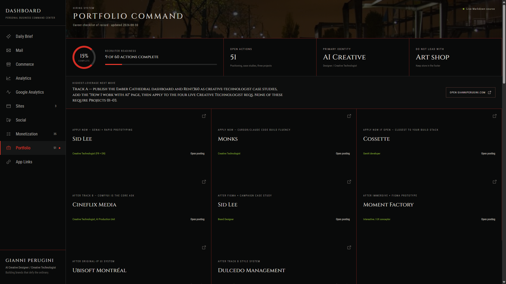
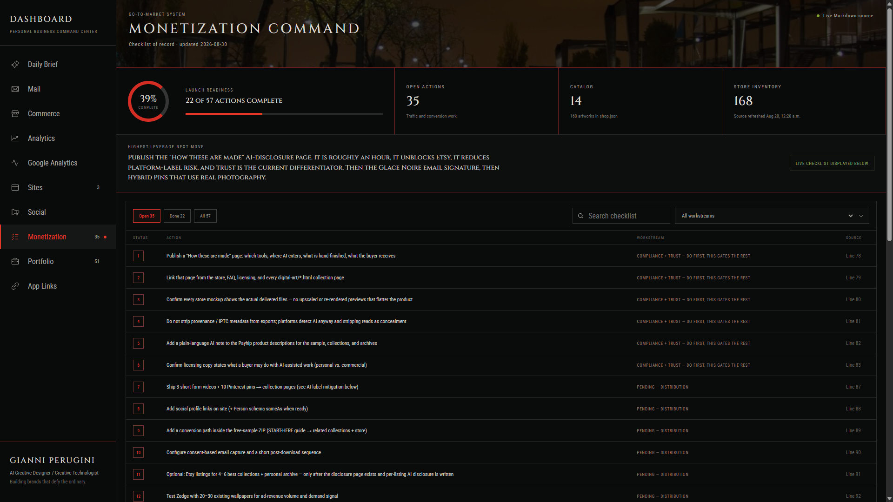
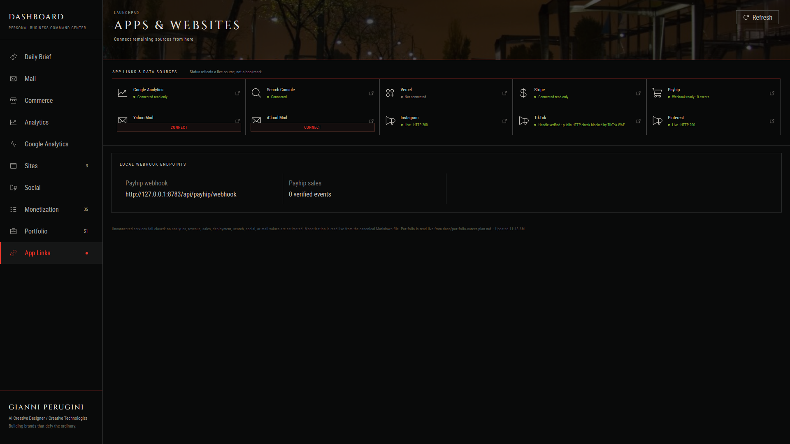

Problem
Running two websites, a store with 17 checkout pages and 168 individual works, two analytics properties, Search Console, Stripe, Payhip, and two mailboxes meant the answer to “what should I do today?” lived in nine browser tabs. Nothing was wrong with any single tool. The problem was that no tool could see the others.
Worse, the tempting fix is the wrong one. Most dashboards fill gaps with estimates, blended averages, and “approximately” figures. A dashboard you run your own business from cannot do that — a plausible wrong number is more expensive than a visible blank.
Role
I designed and built all of it: the product definition, the interface and design system, the Python API layer, the React front end, every read-only integration, and the operating rules that decide what the interface is allowed to say. The build was AI-assisted in Cursor, which is how a solo designer ships a multi-integration product in evenings rather than quarters.
Process
- Write the rule before the interface One rule came first and shaped everything after it: no metric may be estimated, blended, or inferred. An unconnected source renders as “Not connected”, “Unavailable”, or an em dash — never as zero, and never as a guess. Every live metric carries its source and its freshness timestamp.
- Make the plans the database The career plan and the monetization plan are canonical Markdown files in two separate repositories. Instead of copying them into the app, the dashboard reads them live and shows the source line number for every task. Editing the Markdown in an editor and editing the dashboard became the same act, so the plan can never quietly drift from the tool that reports on it.
- Wire read-only integrations, keep the keys out of the repo Google Analytics and Search Console share one OAuth token scoped read-only. Stripe uses a restricted key, Payhip a developer key, and the two mailboxes use app passwords held in memory for the session and never written to disk. Every credential lives in a private application-data folder outside the repository, so the project can be pushed to GitHub without redacting anything.
- Design the empty state as a feature Because sources fail closed, disconnected panels are a normal state rather than a bug — so they had to look deliberate. Status language, spacing, and colour treat “no verified data” as a legitimate answer, which is what makes the connected numbers trustworthy.
UI system
The dashboard shares one visual language with gianniperugini.com, so the tool and the portfolio read as the same body of work.
Type: Cinzel (display) · Roboto Condensed (interface) · crimson rules for structure · orange reserved strictly for status, never decoration.
Screens
Captured from the running dashboard. Analytics and revenue panels are omitted here on purpose — this case study should not publish the traffic and earnings of a live business.



Decisions worth defending
- The Python API uses the standard library only — no web framework and no third-party packages — so the server has no dependency surface to audit or update. ThreadingHTTPServer and a thread pool fetch every source concurrently.
- Analytics access is read-only by scope, not by convention. The dashboard is technically incapable of modifying the Analytics property it reports on.
- API sampling is disclosed rather than hidden, because a number the provider itself estimated should not be presented as exact.
- The public deployment is a UI preview backed by a clearly labelled snapshot. Labelling stale data as stale was cheaper than pretending it was live.
Tech stack
- React 19
- Vite 6
- Recharts
- Python 3 (standard library only)
- OAuth 2.0 (read-only scopes)
- Google Analytics Data API v1beta
- Search Console API v3
- Stripe (restricted key)
- Payhip API + webhook
- IMAP over SSL
- Cursor (AI-assisted build)
Why there is no public link
Every other project here ends with a live URL. This one deliberately does not. The dashboard holds OAuth tokens, a Stripe key, and mailbox access for a real business, so it runs only on my own machines and the credentials never enter the repository. Shipping it as a public web app would have meant either weakening that boundary or faking the data behind it — and the entire point of the product is that it does not fake data.